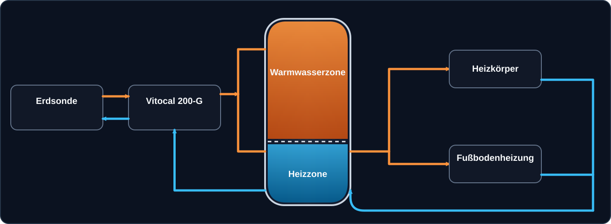

Vitocal 200-G · Vitocell 120-E
 13,9 °C
10,5 °C
78,2 °C
25,4 °C
13,9 °C
10,5 °C
78,2 °C
25,4 °C

 13,9 °C
10,5 °C
48,3 °C
51,4 °C
48,0 °C
41,0 °C
42,0 °C
34,0 °C
35,0 °C
29,0 °C
Mischer 63 %
13,9 °C
10,5 °C
48,3 °C
51,4 °C
48,0 °C
41,0 °C
42,0 °C
34,0 °C
35,0 °C
29,0 °C
Mischer 63 %
Erdsonde
Sole-Eintritt13,9 °C
Sole-Austritt10,5 °C
Vitocal 200-G
Verdichter aktiv
Verdichter aktiv
HK1 · Vorlauf zum Puffer / Rücklauf zur Vitocal
Speicher48,3 °C
HK1 Vorlauf48,0 °C
Puffer oben51,4 °C
HK1 Rücklauf41,0 °C
HK2 / HK3 · Vorlauf und gemeinsamer Rücklauf
HK2 · HeizkörperPumpenstatus —
Vorlauf42,0 °C
Rücklauf34,0 °C
HK3 · FußbodenheizungPumpe aktiv
Pumpe aktiv
Vorlauf35,0 °C
Rücklauf29,0 °C
Mischer63 %